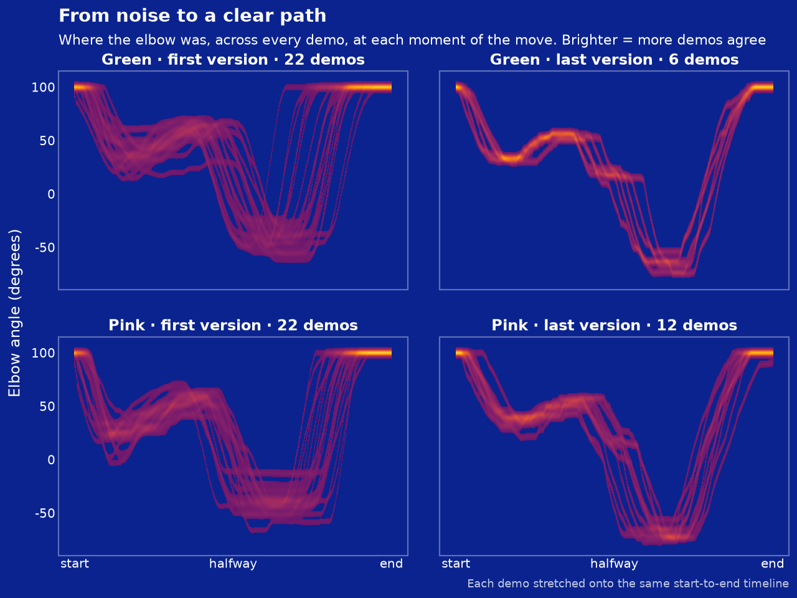

Imitation Learning
Trained on human movement, selected for training speeds and robustness.
Three skills, trained in isolation
Rather than one model that does everything, each skill is its own policy, trained only on its own demonstrations. Anomalib decides which one runs.
Videos are demonstrations we taught the policies with. Placeholder clips: swap for your picks.
ACT
Action Chunking Transformer: a small model that watches the cameras and joint angles and predicts the next chunk of movement (about 3 seconds) in one go.
- Learns from tens of demos
- Trains in minutes
- Smooth motion, because it plans in chunks
VLA
Vision-Language-Action model: a large model pretrained on images and text, fine-tuned to turn a camera view and a written instruction into movement.
- One model for many tasks
- Takes instructions in plain language
- Brings general knowledge from pretraining
Our choice: ACT
With 6 to 61 demos per dataset, we needed a model that learns quickly from very little. ACT was built for exactly that: its authors taught real tasks from only 10 minutes of demonstrations. It let us record, train and try again within the hackathon.
Smaller, clearer data
To be written: a couple of lines on adjusting our demos for smoothness.
